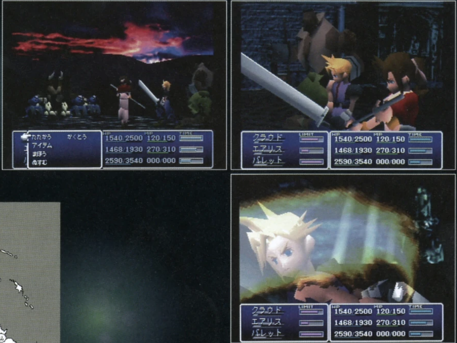
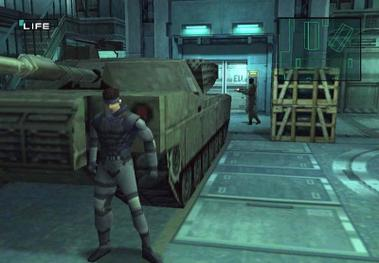
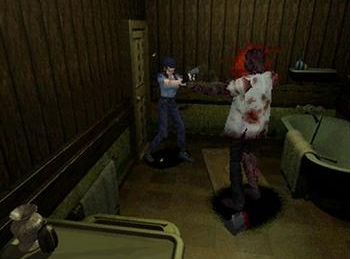
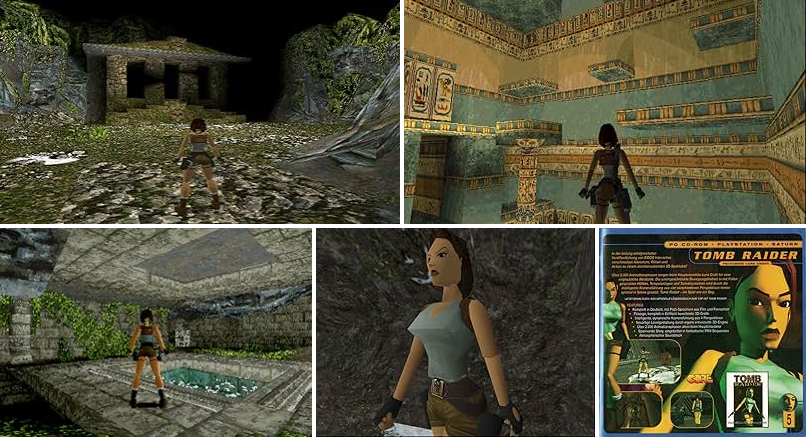

索尼的加入与3D时代（1995-2000）
PlayStation的影响

PlayStation (1994)
- 32位RISC R3000A处理器
- CD-ROM驱动，打破卡带限制
- 革命性的3D图形处理能力
- 针对更成熟玩家的营销策略
关键时间节点
1994/12: PlayStation在日本发售
1995/09: PlayStation在北美和欧洲市场发售
1997: 《最终幻想VII》发布，成为PlayStation标志性游戏
1998: 《潜龙谍影》引领游戏叙事革命
2000/03: PlayStation 2发布，PS1销量突破1亿台
索尼的革命性影响
- 将游戏从"儿童玩具"转变为"流行文化"
- CD-ROM媒介大幅提升游戏容量与表现力
- 吸引更多第三方开发商，改变产业格局
- 成熟的开发工具降低3D游戏制作门槛
开创性3D游戏作品

最终幻想 VII (1997)
将JRPG带入新时代，CG过场动画和3D角色模型的杰作

潜龙谍影 (1998)
电影式叙事与游戏玩法的完美结合，开创潜入类游戏

生化危机 (1996)
现代生存恐怖游戏的开山之作，预渲染背景的经典

古墓丽影 (1996)
3D动作冒险的先驱，塑造了游戏史上标志性角色劳拉
3D革命的技术突破
多边形3D模型取代精灵图
全3D环境与自由摄像机
动作捕捉技术初步应用
光照与材质渲染进步
数字音频与语音配音普及
CG过场动画成为标准
"PlayStation打破了以往游戏机的设计思路，索尼将其定位为一种生活方式产品，而非简单的玩具。这一策略彻底改变了游戏产业的市场格局，并将游戏带入主流流行文化。"
7 / 16